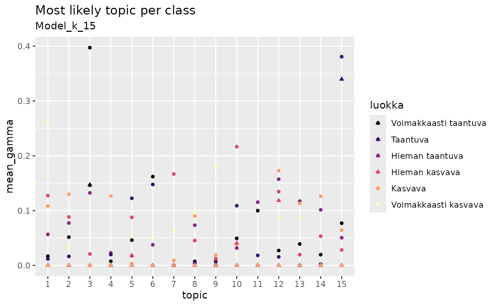

library(rfintext)
library(rfinstats)
library(topicmodels)
library(dplyr)
#>
#> Attaching package: 'dplyr'
#> The following objects are masked from 'package:stats':
#>
#> filter, lag
#> The following objects are masked from 'package:base':
#>
#> intersect, setdiff, setequal, union
library(tidytext)
library(ggplot2)
library(quanteda)
#> Package version: 3.3.1
#> Unicode version: 14.0
#> ICU version: 70.1
#> Parallel computing: 4 of 4 threads used.
#> See https://quanteda.io for tutorials and examples.
library(doFuture)
#> Loading required package: foreach
#> Loading required package: future
library(forcats)
library(purrr)
#>
#> Attaching package: 'purrr'
#> The following objects are masked from 'package:foreach':
#>
#> accumulate, when
plan(multisession, workers = availableCores(logical = FALSE) - 1)
dtm <- aspol |>
preprocess_corpus() |>
corpus_to_dtm(kunta, LEMMA)
#> Dropped 216172 rows
#> Dropped 2263 rows
#> Dropped 18 rows
#> Dropped 31789 rows
#> Dropped 21951 rows
#> Dropped 4834 rows
optimal_k <- c(5, 15, 18, 21)
lda_models <- foreach(k = optimal_k) %dofuture% {
topicmodels::LDA(quanteda::convert(dtm, to = "tm"), k = k, control = list(seed = 1234))
}
names(lda_models) <- paste0("k_", optimal_k)
y <- rfinstats::taantuvat |>
filter(kunta %in% unique(aspol$kunta))
y
#> # A tibble: 66 × 5
#> kunta vaesto kokmuutos_2010_2022 suht_muutos_2010_2022 luokka
#> <chr> <int> <int> <dbl> <fct>
#> 1 Enontekiö 1876 -71 -3.78 Hieman taantuva
#> 2 Espoo 247970 60944 24.6 Voimakkaasti ka…
#> 3 Eura 12507 -1278 -10.2 Voimakkaasti ta…
#> 4 Hartola 3355 -814 -24.3 Voimakkaasti ta…
#> 5 Hattula 9657 -266 -2.75 Hieman taantuva
#> 6 Helsinki 588549 80678 13.7 Voimakkaasti ka…
#> 7 Huittinen 10663 -955 -8.96 Taantuva
#> 8 Hyvinkää 45489 1527 3.36 Hieman kasvava
#> 9 Hämeenlinna 66829 1588 2.38 Hieman kasvava
#> 10 Iitti 7005 -557 -7.95 Taantuva
#> # ℹ 56 more rows
theta_matrix <- bind_rows(
lapply(lda_models, function(x) {
tidytext::tidy(x, matrix = "gamma") |>
filter(document %in% y$kunta)
}),
.id = "model")
theta_matrix
#> # A tibble: 3,894 × 4
#> model document topic gamma
#> <chr> <chr> <int> <dbl>
#> 1 k_5 Enontekiö 1 0.0000903
#> 2 k_5 Espoo 1 0.608
#> 3 k_5 Eura 1 0.0000872
#> 4 k_5 Hartola 1 0.000107
#> 5 k_5 Hattula 1 0.216
#> 6 k_5 Helsinki 1 0.0000129
#> 7 k_5 Huittinen 1 0.0260
#> 8 k_5 Hyvinkää 1 0.0500
#> 9 k_5 Hämeenlinna 1 0.0000456
#> 10 k_5 Iitti 1 0.600
#> # ℹ 3,884 more rows
for (i in unique(theta_matrix$model)) {
print(
theta_matrix |>
filter(model == i) |>
slice_max(gamma, by = document) |>
arrange(topic) |>
left_join(taantuvat, by = join_by("document" == "kunta")) |>
mutate(topic = factor(topic)) |>
ggplot(aes(x = topic, y = suht_muutos_2010_2022, colour = gamma)) +
geom_point() +
scale_colour_viridis_c(option = "A") +
labs(title = "Most likely topic per document", subtitle = paste0("Model_", i))
)
}
for (i in unique(theta_matrix$model)) {
print(
theta_matrix |>
filter(model == i) |>
left_join(taantuvat, by = join_by("document" == "kunta")) |>
summarise(mean_gamma = mean(gamma), .by = c(luokka, topic)) |>
mutate(topic = factor(topic)) |>
ggplot(aes(x = topic, y = mean_gamma, colour = luokka)) +
geom_point() +
scale_colour_viridis_d(option = "A") +
labs(title = "Most likely topic per class", subtitle = paste0("Model_", i))
)
}
for (i in unique(theta_matrix$model)) {
print(
theta_matrix |>
filter(model == i) |>
left_join(taantuvat, by = join_by("document" == "kunta")) |>
mutate(luokka = if_else(suht_muutos_2010_2022 > 0, "Kasvava", "Taantuva"),
topic = factor(as.integer(topic))) |>
summarise(gamma_sum = sum(gamma),
gamma_mean = mean(gamma),
.by = c(luokka, topic)) |>
ggplot() +
geom_tile(aes(x = topic, y = luokka, fill = gamma_mean)) +
scale_fill_viridis_c(option = "A") +
labs(title = "Common topics per class", subtitle = paste0("Model_", i))
)
}